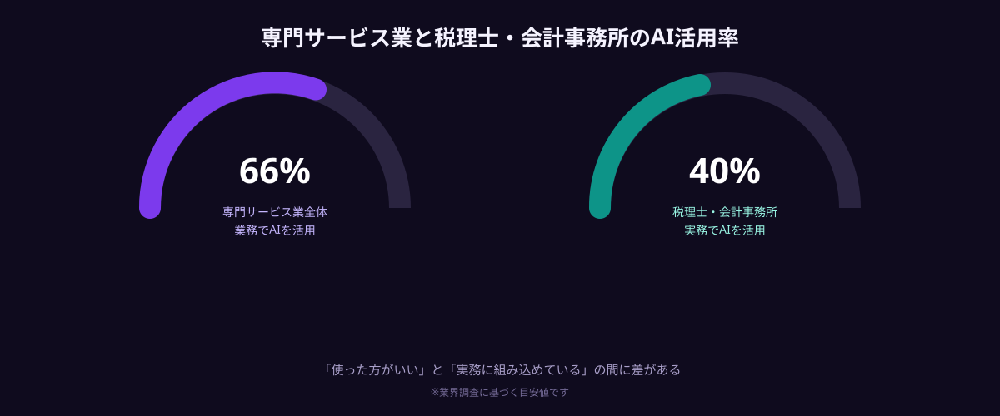
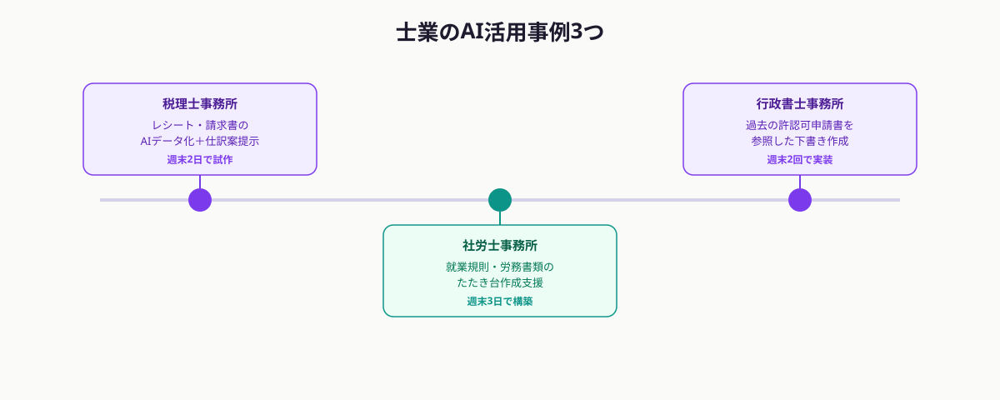

税理士事務所・社労士事務所・行政書士事務所といった士業は、他業種に比べてAI活用が進みにくい業種だと言われています。守秘義務を伴う書類を扱う独特の業務特性が、その背景にあります。
とはいえ、士業の業務には「同じような書類を毎月作成する」「過去の事例を参照して判断する」といった、実はAIが得意とする作業も多く含まれています。「どこからAIを使えるのか」を見極め、対象を絞って小さく試すことができれば、士業でも着実にAI活用を進められます。
士業のAI活用率は本当に低いのか
専門サービス業全体で見るとAIを業務に活用している企業は約66%にのぼる一方、税理士・会計事務所に限ると実務での活用は約40%程度にとどまるという調査結果があります。つまり、「AIを使った方がいいとわかっているが、実際の業務には組み込めていない」士業事務所が一定数存在しているということです。

この差は、士業がAIに不向きということではなく、「何から手を付ければいいかわからない」「自事務所の業務フローに合わせたカスタマイズができていない」ことが主な要因だと考えられます。
士業の業務がAI導入しづらいと言われる理由
士業のAI導入が他業種より進みにくい背景には、いくつかの業種特有の事情があります。
まず、顧客の機密情報・個人情報を扱う業務が多く、汎用的なAIサービスにそのままデータを入力することへの抵抗が強くなります。次に、税制改正や法令改正への対応など、正確性が強く求められる業務が多く、AIの出力をそのまま使うことへの不安があります。さらに、顧客ごとに異なる書式・チェック項目が存在し、汎用のAIツールでは事務所独自のフローに合わないことも少なくありません。
- 顧客の機密情報・個人情報を扱うため、汎用AIサービスへの入力に慎重さが必要
- 正確性が強く求められる業務が多く、AIの出力をそのまま使う不安がある
- 顧客ごとに異なる書式・チェック項目があり、汎用ツールでは対応しきれない
これらの懸念は、「AIにすべて任せる」のではなく「AIに下調べ・一次チェック・たたき台作成までを任せ、最終判断は専門家が行う」という前提で導入範囲を設計すれば、大きく軽減できます。
士業に向いているAI活用の領域
士業の業務の中でも、AI活用に向いている領域とそうでない領域があります。最終的な判断や署名が必要な業務はAIに任せきりにできませんが、その手前の「準備」「下調べ」「たたき台作成」の工程はAIで大きく効率化できます。
例えば、税理士事務所であれば、レシート・請求書のデータ化や、過去の処理事例を参照した仕訳案の提示が候補になります。社労士事務所であれば、就業規則や労務関連書類のたたき台作成、よくある質問への回答案の自動生成が候補になります。行政書士事務所であれば、過去の許認可申請書を参照した申請書の下書き作成が候補になります。
いずれも「最終チェック・提出判断は専門家が行う」という前提を維持したまま、作業時間のかかる準備工程をAIに任せるという設計が、士業のAI活用における基本的な考え方になります。
士業のAI導入をスポット発注で進める3つの理由
士業事務所がAI導入を進める際、大手システム会社へのフルオーダーではなく、スポット発注を選ぶ事務所が増えています。理由は大きく3つあります。
1つ目は、対象業務を絞り込んで小さく試せることです。「まずは請求書のデータ化だけ」「まずはよくある質問の回答案だけ」といった範囲に絞れば、低コスト・短期間で効果を検証できます。
2つ目は、事務所独自の書式・フローに合わせたカスタム実装ができることです。汎用のAIツールでは対応しきれない、事務所ごとの細かいルールに合わせた実装が可能になります。
3つ目は、セキュリティ要件を踏まえた実装を個別に相談できることです。クライアントの機密情報をどこまでAIに渡すか、どのデータを匿名化するかといった設計を、事務所の方針に合わせて個別に組み込めます。
士業のAI活用事例3つ

ANKENを通じたスポット発注で実現した、士業事務所のAI活用事例を紹介します。
税理士事務所では、レシート・請求書のAIデータ化と仕訳案の提示を、週末2日のスポット稼働で試作した事例があります。紙の書類が多い事務所でも、OCRとAIを組み合わせることで入力作業の時間を大きく削減できました。
社労士事務所では、就業規則・労務書類のたたき台作成支援ツールを、週末3日のスポット稼働で構築した事例があります。過去に作成した規則・書類を学習元にすることで、事務所の文体・構成に近いたたき台が出力されるよう調整しました。
行政書士事務所では、過去の許認可申請書を参照した申請書下書き作成ツールを、週末2回のスポット稼働で実装した事例があります。類似業種の過去案件を検索し、必要項目の入力候補を提示する仕組みです。
まとめ・ANKENへのご相談
士業のAI活用率が他業種より低いのは、業務特性上の慎重さが理由であり、AIに向いていないということではありません。「最終判断は専門家が行う」という前提を維持したまま、準備・下調べ・たたき台作成の工程をAIに任せるという設計であれば、士業事務所でも着実にAI活用を進められます。
大切なのは、最初から全業務をAI化しようとせず、「この1つの業務だけ」と対象を絞って試すことです。ANKENでは、士業事務所の業務内容とセキュリティ要件を踏まえたうえで、適切なAIエンジニアを提案します。固定費ゼロ・週末スポットから、士業のAI活用を始められます。
セキュリティ要件を踏まえたご相談も歓迎します。固定費ゼロ・週末スポットから依頼可能です。
👉 無料でスポット依頼を相談する初回相談は無料です。要件が固まっていなくてもOKです。